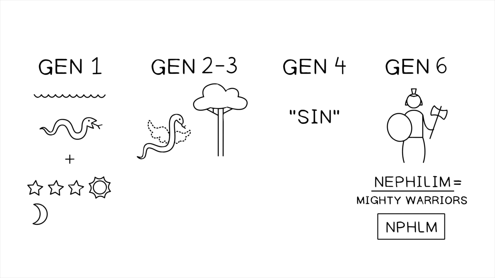

Nos anos anteriores à queda de Jerusalém, Israel se voltou para o Egito em busca de apoio e ajuda contra a Babilônia porque era o único poder político que representava qualquer tipo de ameaça a Nabucodonosor. Jeremias tentou compelir os jerusalemitas a rejeitarem a ajuda do Egito (sem sucesso, ver Jr 37:4-10), e aqui Ezequiel se dedica à mesma tarefa mostrando que o Egito é um aliado arrogante e impotente contra o servo nomeado de Yahweh, a Babilônia.In the years before the fall of Jerusalem, Israel turned to Egypt for support and help against Babylon because it was the only political power that posed any kind of threat to Nebuchadnezzar. Jeremiah tried to compel the Jerusalemites to reject Egypt’s help (unsuccessfully, see Jer. 37:4-10), and here Ezekiel sets himself to the same task by showing that Egypt is an arrogant, helpless ally against Yahweh’s appointed servant Babylon.
Ezequiel usa uma imagem tradicional da mitologia cananeia: o grande dragão do mar que representa todas as forças opostas a Yahweh e que é morto e destruído quando Yahweh traz a sua justiça. Essa história de fundo é ecoada no Salmo 74:13-14, 89:9-10; Isaías 27:1, 51:9; e Jó 7:12. Essa figura também é chamada de “Raabe” e era uma imagem profética comum para o Egito, ver Isaías 30:7. Faraó é reduzido à imagem de um crocodilo (comum no Nilo) capturado e deixado para apodrecer no deserto.Ezekiel uses a traditional image from Canaanite mythology: the great sea-dragon who represents all forces opposed to Yahweh and who is slain and destroyed when Yahweh brings his justice. This backstory is echoed in Psalm 74:13-14, 89:9-10; Isaiah 27:1, 51:9; and Job 7:12. This figure is also named “Rahab” and was a common prophetic image for Egypt, see Isaiah 30:7. Pharaoh is reduced to the image of a crocodile (common in the Nile) captured and left to rot in the desert.
Ezequiel havia predito que Tiro seria sitiada e destruída pela Babilônia (capítulos 26-28, datados de 586 a.C.). Como aconteceu, o cerco de Nabucodonosor a Tiro foi prolongado por 13 anos (referência cruzada com Josefo, Contra Ápion, 1.4), e ele nunca foi capaz de superar a defesa da cidade. A Babilônia e Tiro chegaram a algum tipo de acordo, e Tiro de fato aquiesceu à autoridade babilônica depois desse ponto, mas a profecia de Ezequiel sobre a destruição da cidade não foi cumprida exatamente como ele predisse.Ezekiel had predicted that Tyre would be besieged and destroyed by Babylon (chapters 26-28, dated to 586 B.C.E.). As it turned out, Nebuchadnezzar’s siege of Tyre was prolonged for 13 years (cross-reference with Josephus, Against Apion, 1.4), and he was never able to overcome the city’s defense. Babylon and Tyre reached some kind of settlement, and Tyre did acquiesce to Babylonian authority after this point, but Ezekiel’s prophecy of the city’s destruction was not fulfilled exactly as he predicted.
Isso faz de Ezequiel um falso profeta? Alguns aparentemente pensavam assim (ver Ez 12:23-28). Mas neste oráculo (datado 15 anos depois dos capítulos 26-28), Yahweh ajusta a sua palavra anterior através de Ezequiel: o Egito será conquistado pela Babilônia no lugar de Tiro e servirá como recompensa pelo cerco fracassado. Yahweh tem liberdade sobre a sua palavra para mudar como ela pode ser cumprida. Isso destaca dois aspectos das profecias de Ezequiel que são fundamentais para considerar.Does this make Ezekiel a false prophet? Some apparently thought so (see Ezek. 12:23-28). But in this oracle (dated 15 years after chapters 26-28), Yahweh adjusts his previous word through Ezekiel: Egypt will be conquered by Babylon in place of Tyre and serve as a reward for the failed siege. Yahweh has freedom over his word to change how it may be fulfilled. This highlights two aspects of Ezekiel’s prophecies that are key to consider.
“Esta pequena passagem serve como um aviso de que já nos dias do próprio Ezequiel era claro que não precisaria haver sempre um cumprimento literal das predições que ele havia feito com a sua retórica poética artística. O fato de uma predição não se ‘cumprir’ rapidamente em termos literais não significava que a palavra profética perdesse toda a autenticidade ou relevância. É irônico que as profecias de Ezequiel tenham sofrido sob os labores daqueles determinados a levar algumas das suas visões posteriores com literalismo absoluto. Tais pessoas usam as palavras de Ezequiel para predizer todos os tipos de cenários de ‘fim dos tempos’, e os seus prognósticos falharam manifestamente em se materializar como predito (embora não antes de fazerem uma grande quantidade de dinheiro!).”“This little passage serves as a warning that even in Ezekiel’s own day it was clear that there need not always be a literal fulfillment of the predictions he had made with his artistic poetic rhetoric. The fact that a prediction did not quickly ‘come true’ in literal terms did not mean that the prophetic word lost all authenticity or relevance. It is ironic that Ezekiel’s prophecies have suffered under the labors of those determined to take some of his later visions with utter literalism. Such people use Ezekiel’s words to predict all kinds of ‘end times’ scenarios, and their forecasts have manifestly failed to materialize as predicted (though not before they made a great deal of money!).”
Wright, Christopher J.H. (2001). The Message of Ezekiel: A New Heart and a New Spirit. IVP Academic. 249-250.Wright, Christopher J.H. (2001). The Message of Ezekiel: A New Heart and a New Spirit. IVP Academic. 249-250.
“Deus está ciente de que os oráculos contra Tiro não foram cumpridos como originalmente entregues. Mas ele não será feito cativo nem mesmo pela sua própria palavra … Na sua preocupação com o cumprimento literal das predições de Ezequiel, a sua audiência havia negligenciado a função primária da sua pregação: persuadi-los a se arrependerem dos seus pecados, a reconhecerem Yahweh e a se submeterem às suas reivindicações sobre as suas vidas. A proclamação profética é mais do que adivinhação; é retoricamente carregada de exuberância, paixão, hipérbole, linguagem figurada e quaisquer meios que forem necessários para evocar uma resposta no ouvinte. A preocupação com o cumprimento das predições tem uma tendência a ensurdecer os ouvintes para a mensagem primária de Deus e do seu agente em qualquer época.”“God is aware that the oracles against Tyre have not been fulfilled as originally delivered. But he will not be held captive even by his own word … In their concern for the literal fulfillment of Ezekiel’s predictions, his audience had overlooked the primary function of his preaching: to persuade them to repent of their sins and to acknowledge Yahweh, and to submit to his claims on their lives. Prophetic proclamation is more than fortune-telling; it is rhetorically charged with exuberance, passion, hyperbole, figurative language, and whatever means it will take to evoke a response in the hearer. Preoccupation with the fulfillment of predictions has a tendency to deafen hearers to the primary message of God and his agent in any age.”
Block, Daniel (1998). The Book of Ezekiel, Chapters 25-48 (The New International Commentary on the Old Testament). Eerdmans.Block, Daniel (1998). The Book of Ezekiel, Chapters 25-48 (The New International Commentary on the Old Testament). Eerdmans.
Ezequiel 30:1-19 anuncia o dia do Senhor vindo contra o Egito na forma de um lamento pela queda impressionante do Egito e dos seus aliados.Ezekiel 30:1-19 announces the day of the Lord coming against Egypt in the form of a lament for the astonishing downfall of Egypt and her allies.
Ezequiel contrasta o braço quebrado de Faraó com o braço fortalecido do rei da Babilônia.Ezekiel contrasts the broken arm of Pharaoh with the strengthened arm of the king of Babylon.
A comparação com a Assíria em 31:3 é estranha se o oráculo inteiro é sobre o Egito. O poema ou (1) compara a queda iminente do Egito com a ascensão e queda da Assíria ou, (2) o poema é um erro de escriba que resultou na mudança de “Cipreste” para “Assíria,” o que faria sentido na declaração conclusiva de 31:18.The comparison with Assyria in 31:3 is odd if the entire oracle is about Egypt. The poem is either (1) comparing Egypt’s imminent downfall with Assyria’s rise and fall or, (2) the poem is a scribal error that resulted in the change from “Cypress” to “Assyria,” which would make sense of the concluding statement in 31:18.
O motivo da árvore cósmica é outra imagem que Ezequiel toma da sua herança cultural mesopotâmica (ver a discussão de Block sobre os mitos antigos sumérios, babilônicos e ugaríticos da árvore cósmica). Daniel 4 é o paralelo bíblico mais próximo (Jesus se baseou em ambos nas suas parábolas do reino em Marcos 4:30-32), e Ezequiel liga a árvore ao jardim em Gênesis 2.The cosmic tree motif is another image Ezekiel takes up from his Mesopotamian cultural heritage (see Block’s discussion of ancient Sumerian, Babylonian, and Ugaritic cosmic tree myths). Daniel 4 is the closest biblical parallel (Jesus drew on both in his parables of the kingdom in Mark 4:30-32), and Ezekiel links the tree to the garden in Genesis 2.
Imagens de Rebelião Espiritual em Gênesis 1-6. Ilustração criada por Tim Mackie para BibleProject Classroom: Ezequiel (2021).Images of Spiritual Rebellion in Genesis 1-6. Illustration created by Tim Mackie for BibleProject Classroom: Ezekiel (2021).

Como você entende a relação entre impérios humanos corruptos e seres espirituais rebeldes?How do you understand the relationship between corrupt human empires and rebellious spiritual beings?